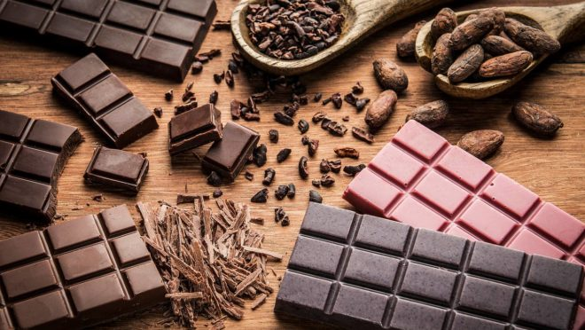
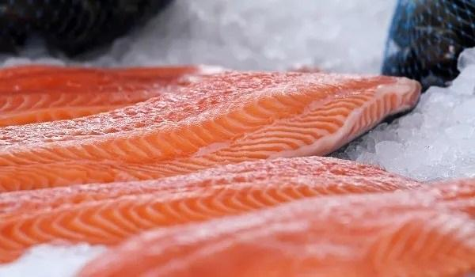

Alimentos Deliciosos que fazem mal pro meio ambiente
Chocolate
Chocolate é muito cobiçado pelo mundo, mas quase ninguém imagina o que acontece por trás do seu processo, comem e ignoram as consequências, mas as vezes é bom saber o que acontece por trás de tudo aquilo que consumimos em nossos lares. Sem contar com o trabalho escravo de uma boa parcela da população e o gasto imenso de água por quilo de chocolate.
Salmão
O salmão pode ser conseiderado uns dos sistemas que mais prejudicam o meio ambiente , a criação desse alimento na maioria das vezes , usa gaiolas ancoradas , que tem um contato com a água do mar assim permitindo que produtos quimicos , tenham contato no mar. O salmão é um peixe carnivoro e necessita de alimentos de altos indices que tenha muitas proteinas, segundo um site especializado em salmão , para gerar um quilo , precisa capturar até cinco quilo de peixes oleaginosos , como a sardimhas. A maioria do salmão tem seu transporte feito por aviões , sua pegada carbonica vale a dirigir um carro por 4 km para cada 100 gramas consumidas diz estudo .
Cana de Açúcar
A Cana de açúcar é uma planta que trás consequências ao meio ambiente, como por exemplo, poluição, perca de habitats de espécies nativas e degradação do solo. Sem contar a Cultura, que causa um abundante gasto de água O meio ambiente é importantíssimo para a vida humana, devendo ser bem cuidado e evitar certas situações, "pois vamos estar nos matando aos poucos"